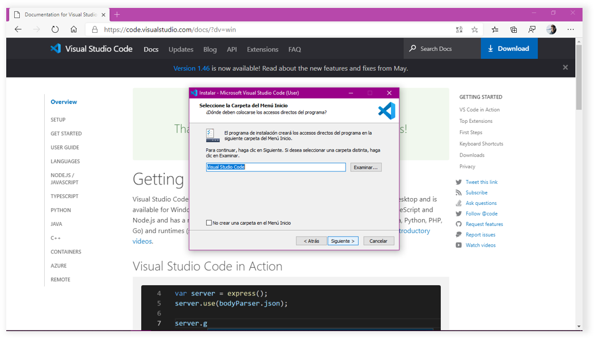

Es un editor de código que nos va a facilitar la escritura de código. Existen otros editores pero este es uno de los más comunes.
1. En este linkseleccionar "Download for Windows".
2. Abrir el instalador
3. "Acepto el acuerdo"
4. Siguiente
5. Siguiente
6. Seleccionamos todos los casilleros
7. Siguiente
8. Instalar
9. Finalizar
10. Abrir VSC
11. Ir a extensiones y buscar "Spanish"
12. Instalar la extensión